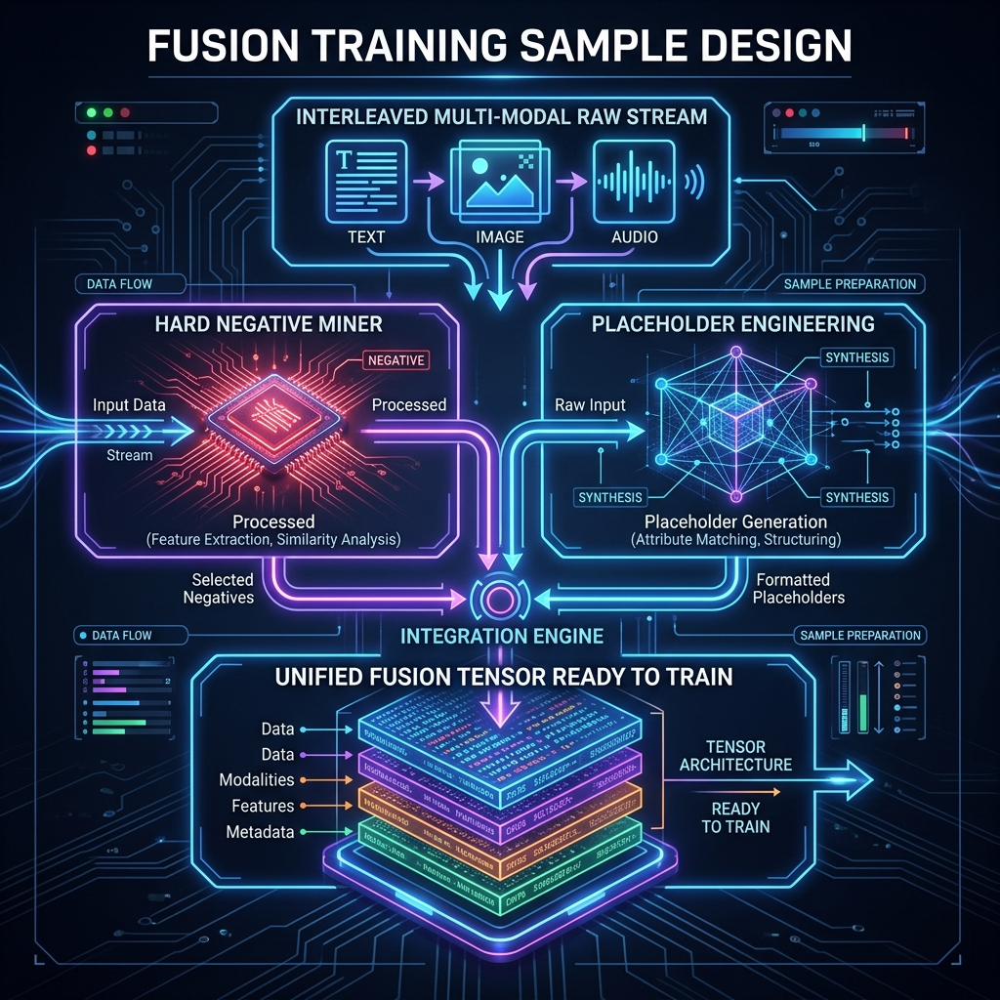

第11章 跨模态对齐与融合¶
到本章为止，前面的单模态清洗流程已经基本介绍完毕。第八、九章（图文） 和 第十章（音视频） 分别讨论了图片水印、OCR 错误以及长视频关键帧切片等问题。
但需要指出的是：单模态数据清洗到位，并不等于已经构建出可用的多模态训练样本。如果只是把清洗后的图片、声音和文字 Token 无结构地堆叠进 Context Window，模型并不会自动学到“跨模态推理（Cross-modal Reasoning）”，反而容易出现模态间相互干扰与对应关系错位的幻觉（Hallucination）。
本章作为《第三篇：多模态高质量数据工程》的收尾，重点放在如何制作跨模态融合的训练监督样本（Cross-modal Fusion & Alignment Samples），让模型在视、听、文之间建立稳定的对应关系。
11.1 跨模态对齐要解决的问题¶
11.1.1 模态鸿沟与异构空间¶
“对齐（Alignment）”这个词在 AI 领域含义较广。下一卷（第四篇）中的“对齐”更多指 RLHF 等价值观对齐；本章讨论的是数据准备阶段的异构空间模态鸿沟（Heterogeneity Gap）。
文本在 Embedding 空间中是高维向量，表达“语义（Semantics）”；图像被 Vision Encoder 编码后得到的多为“边缘、颜色、纹理集合（Patch Features）”；音频波形则被映射到高低频振幅空间。 这三类向量的维度与所对应的数学流形（Manifold）原本相互独立。所谓“跨模态对齐工程”，就是通过构建高质量数据集，让不同 Encoder 在面对同一物理概念（如“一只正在叫的橘猫”）时，输出落在同一空间内距离接近的联合表征向量。
11.1.2 为什么单独清洗图文/音视频还不够¶
前置处理（如第 8 章所做）主要负责丢弃模糊图片或无声视频。如果只停留在这种“基础卫生清洗”阶段，难以获得真正的跨模态能力。
独立清洗无法建立对应关系。 假设有 100 万张高清猫咪图片和 100 万段描写猫咪的文本，单独看每一项的质量都很高。但如果不在某张图与某段文字之间建立显式连接（Hard Link），模型就无法知道“橘黄色猫毛”这个 Token 对应到图片中的哪些像素。这正是需要投入额外人力与算力构建配对（Pairs）和交错对（Interleaved Data）的原因。
11.1.3 模型收敛失败常被归因到错误的环节¶
当千亿规模视觉模型训练 Loss 出现严重抖动，或推理时面对图片输出错误内容时，算法团队的第一反应往往是怀疑学习率或 Attention 结构。 但从数据工程视角看，多模态融合模型收敛失败的常见原因，是对齐样本中存在“弱关联”或“高伪像”等脏信号。 例如，训练样本中图片是“巨大的埃菲尔铁塔”，而文字标注是“我今天在巴黎开心地吃了个羊角面包”——这就是一条典型的“弱相关甚至互斥”样本。对比损失（Contrastive Loss）会把“吃面包的语义”与“埃菲尔铁塔的视觉张量”强行拉到一起，长期累积会破坏模型的常识对应关系。
11.2 三级对齐策略：对象级、片段级与文档级¶
要实现稳定的对齐，需要按层级组织数据。工业实践中通常将对齐颗粒度（Granularity）分为以下三个层级。
 图11-1：跨模态对齐的三级金字塔架构。底层（Base Level）通过 BBox 将具象实体与文本词汇锚定；中层（Meso-Alignment）通过时间切片对齐视频片段与音频段落；顶层（Macro-Alignment）则由跨越数百页 PDF 与上万 Token 流的长文本与文档版面进行宏观交错编排。三层之间逐级支撑。
图11-1：跨模态对齐的三级金字塔架构。底层（Base Level）通过 BBox 将具象实体与文本词汇锚定；中层（Meso-Alignment）通过时间切片对齐视频片段与音频段落；顶层（Macro-Alignment）则由跨越数百页 PDF 与上万 Token 流的长文本与文档版面进行宏观交错编排。三层之间逐级支撑。
11.2.1 对象级（Object-level / Micro-alignment）：框与词的细粒度锚固¶
这是多模态基座的最底层基础。
该层级不涉及复杂的语义关系，只需要保证几何坐标到文本词汇的准确映射：例如图片中出现的一只猫，需要标注其 Bounding Box（2D 边框坐标），如 [x1:100, y1:200, x2:350, y2:450]；并在对应的文本 JSON 中写入 <box> 猫 </box>。
这样可以在早期 Projection Layer（投射层）训练中，让模型把框内的 RGB 像素与词表中 ID 为 45321 的 Cat 建立对应关系。
此层对齐若出现大面积错误（如坐标错位导致猫的位置被打上“狗”的标签），会持续干扰 Vision Encoder 的局部映射函数。
11.2.2 片段级（Segment-level / Meso-alignment）：时间序列映射¶
这是第 10 章重点讨论的层级。其核心难点是跨模态长度不一致：一段 3.5 秒、含 105 帧的视频，伴随 3.5 秒音频波形，对应的文字可能只有一句 “The white car drives down the street.”。
105 帧视觉画面如何映射到 7 个英文单词？工程上通常使用 DTW（Dynamic Time Warping，动态时间规整）或基于注意力图的软关联机制进行切分。该层级允许一定的前后浮动（例如几百毫秒），但不应出现“因果倒置”式的时序错乱。
11.2.3 文档级（Document-level / Macro-alignment）：超长交错融合¶
当模型在短句对应的图文与短视频上稳定后，下一步是处理跨页文档（这也是当前 GPT-4o 等模型在长上下文多模态处理上的研究方向）。 这里的对象不再是单个片段，而是几十上百页带图解的说明书、论文，或一个 PDF 渲染出的连续图片序列。 此阶段数据制作的关键不再是细节坐标，而是如何在 100K 甚至 1M 的 Token 训练窗口中，将图、文、声信号有序地交错排列（Interleaved Ordering），让模型可以在跨数十页的范围内，依据前文给出的图例去推断后文的隐喻或结论。
表11-1：三层异构对齐策略与其必须应对的最前沿大模型适用特种任务一览表
| 颗粒度封层 | 对齐的手段与特征表达 | 数据依赖的构建开销 / 高度成本代价 | 主要适用任务 |
|---|---|---|---|
| 底层：对象级 (Object-level) | 人工密集 BBox 标注；或由大模型教师生成精细抠图区域并对应单词坐标点。 | 💸💸💸（成本较高，依赖人工众包或大量小模型推断算力） | Region Grounding（区域级溯源）、病理图像病灶定位、无人机视觉目标锁定 |
| 中层：片段级 (Segment-level) | 时间轴对齐算法；通过双塔打分（如 CLIP Score 或 CLAP Score）进行密集过滤。 | 💸💸（算力消耗较大，频繁的短段解压与重排计算） | Action Recognition（动作识别）、Video Captioning（短视频解读与摘要）、Voice Translation |
| 顶层：文档级 (Document-level) | 高级排版提取引擎（如 Nougat 解构网络）；面向多图文互相引用的长交错序列。 | 💸（重在长文本调度编排，对上下文缓存 Context Cache 与 KV 优化挑战较大） | 长流程 Multi-modal QA（多页财报或研报问答）、长时序事件因果推理 |
11.3 表示、融合与难负样本设计¶
理解了对齐的层级之后，下一步是如何把它们组织成可以顺利通过大模型的数据结构。这一步涉及表示与融合层的工程实现。
11.3.1 统一张量表示与占位符工程（Placeholder Engineering）¶
主流大语言模型只接受离散 Token（如 1 表示 I，2 表示 love）。图片和声波要变成离散 Token，需要 Placeholder Engineering 与 Quantization 的配合。通过 VQ-VAE 或更新的离散 Auto-Encoder 提取后，连续的视觉张量会被映射为离散编号（例如图像块表示为 <IMG_TK_451>）。在生成训练样本时，JSON 数据流中并不需要直接塞入大量浮点数矩阵，而是使用占位符形式，例如：<|image_start|> <IMG_TK_451> <IMG_TK_882> <|image_end|> 表示一张图片。

{kind=link}
11.3.2 难负样本（Hard Negatives）的挖掘与生成¶
这是多模态监督对齐（Supervised Contrastive Alignment）中最关键的数据构建环节之一。如果模型在“猫 vs 狗”这类样本上能轻松区分，能力提升会很快遇到瓶颈。需要人为引入高难度干扰项，让模型关注更细微的差异。 难负样本的常见构造方式： 1. 细微替换法（Subtle Replacement Mining）：保留正样本图片“一只蓝色的杯子放在木桌上”。然后从语料库中检索仅改变小修饰词的文本，如“一只黑色的杯子放在木桌上”，并将其作为负样本输入模型。这种构造会引导 Vision Encoder 关注图中“杯子”的具体颜色等细节，而不是停留在物体类别层。
11.4 评估指标与质量回归¶
跨模态融合数据集如果不带有量化评估就直接下发训练，会显著增加生产风险。
表11-2：评估指标与典型故障来源对照表
| 自动化评估指标 | 在多模态体系中的工程含义 | 当该指标异常下降时通常意味着什么 | 修复措施 |
|---|---|---|---|
| 跨模态召回率（Cross-Modal R@1 / R@5） | 输入一张包含 50 个对象的图片，使用文本反向检索时，前 5 次内召回到正确描述句子的概率。 | 该指标偏低通常表示 Object Level 对齐坐标或词表映射出现错位。 | 暂停发布，调用教师模型重新生成全量 BBox。 |
| 时间轴对齐连续性分数（Temporal Alignment Continuity Score） | 音轨转写词序与视频切片中事件发生的时间顺序是否一致。 | 出现倒置时通常说明使用了重排序抽帧算法，或缺少全局时间 ID。 | 引入全局时间戳约束（Global Timestamps Constraint）。 |
| 文本蕴含冲突率（Textual Entailment Conflict Rate） | 同一张图配 10 句不同标注时，这些标注之间是否互相矛盾。 | 通常说明外包标注数据有掺水或质检环节失效。 | 启动 HITL（Human-in-the-Loop）抽检并提高复检比例。 |
11.5 失败模式复盘与缓解措施¶
作为《第三篇：多模态高质量数据工程》的收尾，本节通过两个真实案例说明跨模态对齐数据中常见的故障模式与处理方式。
11.5.1 案例一：医疗多模态问答中的左右部位错位（对象错位）¶
某健康 AI 机构开展过一项基于胸透 X 光片（高像素密度）与主治医师医嘱文本的对齐项目。模型在内部测评中表现良好。 但上线后出现了严重问题：模型会把患者左肺上的正常阴影标记为癌变区域。排查发现，原始扫描样本的数据预处理阶段，工程师未禁用通用图像增广中的“水平翻转/镜像（Mirroring Data-Augmentation）”操作。X 光片的左右肺解剖结构不可镜像，启用该增广导致左肺张量与右肺结节张量在空间上发生了交换，进而污染了下游训练。该机构因此报废了耗时约六个月构建的核验集。 缓解要点：医学影像数据流水线必须显式禁用水平翻转、左右镜像等会改变解剖语义的增广操作，并在数据校验阶段加入左右一致性检查。
11.5.2 案例二：安防视频检索中的时序错位（片段错位）¶
某安防平台的大模型出现过一种异常现象：监控画面中歹徒翻墙逃逸时，模型推断出的音频不是翻墙的现场声响，而是两小时后审讯室里的对话音频。 排查后发现，11.2 节的片段级对齐管道在分布式存储中使用了弱一致性的 NoSQL（Eventual Consistency）方案。超过 12,000 个监控录像片段的长音频轨道，因极小的读写延迟产生了 Off-by-One 的指针偏移，使得当前段视频实际上挂上了下一段的音频，形成系统性的时序错位。 缓解要点：跨模态片段级对齐的存储后端应使用强一致性方案（或加显式版本号/时间戳校验），并在合并写入时增加偏移检测，避免类似的指针位移误差。
11.5.3 第三篇小结与下一篇导言¶
回顾本篇内容：从图片水印清洗起步，经过视频时空切分与重组，再到本章的三层跨模态对齐策略，多模态数据工厂的主要环节已经介绍完毕。至此，进入大模型训练流程的多模态数据，已经是经过结构化处理、对齐良好的训练样本。
但是，模型现在所掌握的更多是物理世界与视听信号的统计规律，并不天然具备任务约束与人类偏好。要让模型在面对实际任务时给出稳定、合规且符合人类期望的回答，需要进入下一阶段的工作。下一篇将进入《第四篇：对齐与指令数据（Alignment and Instruction Data）》，从第 12 章开始系统介绍 SFT、偏好数据、RLAIF/PPO 等环节的数据工程方法。